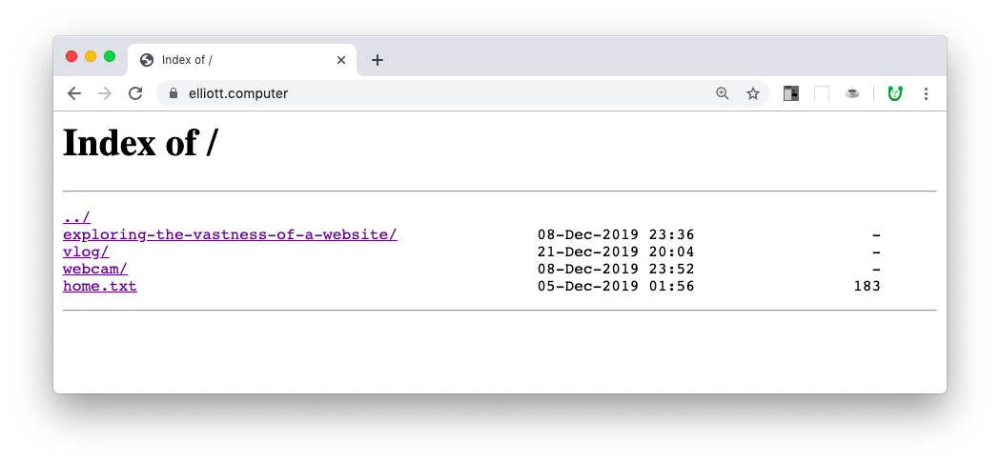

The other day I saw Elliott tweet...
websites that we need in 2020:
— elliott's company 2 (@elliottsphone) December 21, 2019
- small community social networks
- video sites that feel like vimeo/youtube 1.0
- music sites that feel like <audio>
- micro blogging website that feels like .txt
And found myself thinking that a great solution to “micro blogging .txt” might be simply displaying the files on your website via Apache DirectoryIndex.
In fact, right now, Elliott (http://elliott.computer) has something like this going on...

To tell your Apache server to display your files, you need to create a special .htaccess file. (Note that it has a dot in front of its name, meaning it is typically invisible.) You will tell it something like this. This tells your webserver to display its files...
Then you place this .htaccess in your server’s root directory, letting visitors see and browse your website’s files. I like this because it highlights what a website is... simply a collection of files.
We are currently in progress with something similar, a simple file directory. Some snippets...

As you can tell, we styled our index! We added yellow background and some custom icons. Here is a peek into our .htaccess:
In addition to telling our server to display the index (line 1) we also told it to do this in a “fancy” way... displaying of additional file information than is default (line 2), and after that, we specify a header and footer file that are inside of a (not-shown) folder that we named _ (underscore). The header has a little CSS inside, which is giving the page the yellow background. And line 14 onwards is specifying custom icons, overriding the defaults! Of course we chose fruit...
We learned all this from a very helpful blog post.